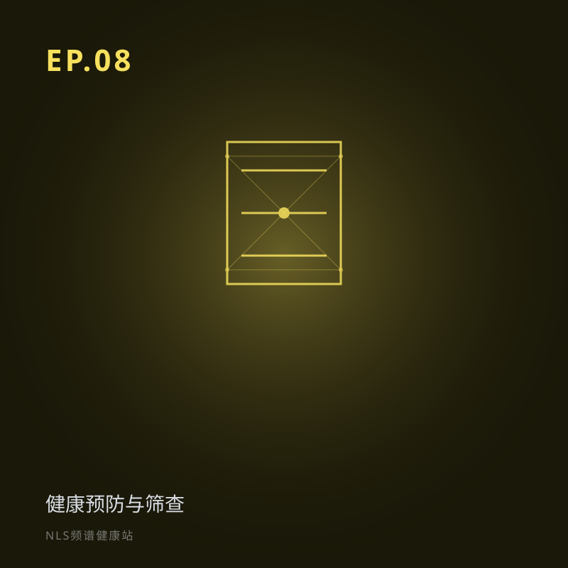

EP.08 健康预防与筛查：从「管健康」到「防健康问题」
所属专题：预防与特殊人群
EP07 讲「管已有问题」，EP08 再往前推——「别让问题发生」。中医叫「上工治未病」。本期聊 NLS 在健康筛查里的角色：补传统体检的「功能盲区」、做早期预警；也诚实话筛查的边界。
健康预防与筛查：从「管健康」到「防健康问题」。介绍三级预防与 NLS 在二级预防中的角色，补传统体检的功能盲区；同时诚实讨论假阳性、过度诊断与筛查边界。关键词：预防医学、治未病、健康筛查、早期预警。
分段要点
-
00:00开场：治未病 预防胜于治疗。
-
03:00预防医学三个层次 一级/二级/三级预防；NLS 主战场在二级。
-
10:00NLS 让早期发现可操作 补结构检查的功能盲区；烟雾报警器比喻。
-
22:00筛查的阴暗面 假阳性焦虑、过度诊断、不能保证不生病。
#预防医学#治未病#筛查#早期预警#假阳性
本集内容仅供科普参考，不构成医疗建议。健康决策请咨询专业医生。
阅读完整文字稿（小乐 / 小思对话全文）